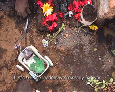

|
FIRST ELECTIONS
Sarah Vanagt | Belgium 2006 | 14 min.
Format: Beta SP
Material: 8mm, DV
Original language: Kinyarwana,Swahili
Script: Sarah Vanagt
Camera: Sarah Vanagt
Editing: Inneke Van Waeyenberghe
Sound: Pete Connelly
Production: Balthasar Production
Distribution: Argos
Dialogue Award, 20th European Media Art Festival, Osnabruck 2007
Best Belgian Short Film Award, COURTisane Festival, Ghent 2007
Artistic Documentary Award, Canariasmediafest, Gran Canaria 2006
Goma (eastern Congo), April 2005. A group of children acts out the elections that will have to take place a couple of weeks later – the first democratic elections since the independence. The ‘election game’ comes about naturally, without outside staging of any kind. There is a lot of violence in the election game. Death really manifests itself. The way in which the children imitate the discourse of the various political leaders is remarkable. The election game turns into a barometer for the current political climate in the borderline are between the Democratic Republic of the Congo (DCR) and Rwanda. After all, children have a way of repeating out loud what they heard grown-ups whisper. The relationship between local politics and the children are embodied by Bébé Rico and Bébé Elégance, two animated babies, who are advertising baby soap. The Rico commercials have a political connotation in the collective imagination of the Congolese people. Bébé Rico is identified with president Joseph Kabila, and Bébé Elégance with vice-president Jean-Pierre Bemba.
Sarah Vanagt , born in 1976, studied History at the universities of Antwerp, Groningen and Brighton and documentary filmmaking at the London National Film and Television School. Her work has been shown at Tate Modern (London), IDFA (Amsterdam), Transmediale (Berlin), Museo Reina Sofía (Madrid) and EMAF (Osnabruck), amongst others. She lives and works in Brussels.
Films: After Years of Walking 2003 | Little Figures 2003 | Begin Began Begun 2005 | Les Mouchoirs de Kabila 2005 (Installation) | First Elections 2006 | Power Cut 2007 (Installation) | Hoofd 2007 (Installation) | Ash Tree 2007 (Installation)
Exhibitions (selection): 2004 "Zona de mestizaje. Cine y vídeo de artistas belgas', Museo Nacional Centro de Arte Reina Sofía, Madrid | Doc House at The Other Cinema, London | IDFA International Documentary Festival, Amsterdam | 2005 Visions du Réel, Nyon | One World Film Festival, Prague | 2006 'Videozone 3', International Video-Art Biennial, Tel-Aviv | Miaca, Tokyo | 2007 Rencontres Internationales, Madrid
back
|